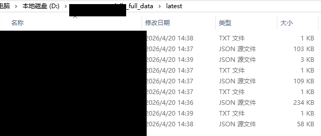

主流程整合阶段
完整脚本整合
目标
把 Zabbix API 取数、AI 分析、结果落盘和钉钉推送整合成一条可重复执行的完整链路。
1. 主脚本位置
项目最终整合到 zabbix_step4_full_pipeline.py。这一版不再只是单点验证，而是面向实际运行结果设计。
2. 核心逻辑
脚本固定处理 4 类关键设备，通过 Zabbix API 找到目标对象后，再拉取最近 24 小时有更新的监控项，把数据保存为设备级结构化文件，再调用 AI 输出结论文本，最后统一推送钉钉。
3. 关键增强
1. 每台设备生成 *_data.json 和 *_ai.txt
2. 每次运行前自动删除上一轮结果
3. AI 请求加入 300KB 最大字节保护
4. AI 输出限制为 10 句以内
5. 自动生成 run_summary.json
6. 汇总结果自动推送钉钉应用消息python .\zabbix_step4_full_pipeline.pydaily_full_data/latest 仅作为输出目录示例，公开页面不展示该目录下的真实 JSON 内容、真实设备名称或真实主机标识。

4. 阶段成果
这一步完成后，项目不再只是“可以跑通的几个分步骤脚本”，而是已经具备完整执行链路和稳定文件产物的自动化工具。后续 Linux 部署和定时执行，都是建立在这个完整脚本基础上的。
本阶段成果
完整主流程脚本已形成，支持固定设备批量取数、AI 分析、结果落盘和钉钉汇总推送。